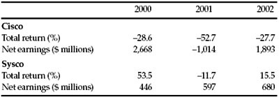
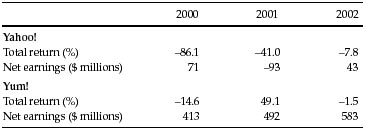
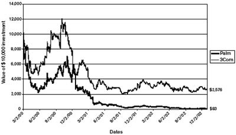
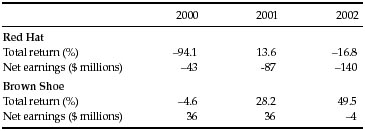

The thing that hath been, it is that which shall be; and that which is done is that which shall be done: and there is no new thing under the sun. Is there any thing whereof it may be said, See, this is new? it hath been already of old time, which was before us.
—Ecclesiastes, I: 9–10.
L et’s update Graham’s classic write-up of eight pairs of companies, using the same compare-and-contrast technique that he pioneered in his lectures at Columbia Business School and the New York Institute of Finance. Bear in mind that these summaries describe these stocks only at the times specified. The cheap stocks may later become overpriced; the expensive stocks may turn cheap. At some point in its life, almost every stock is a bargain; at another time, it will be expensive. Although there are good and bad companies, there is no such thing as a good stock; there are only good stock prices, which come and go.
On March 27, 2000, Cisco Systems, Inc., became the world’s most valuable corporation as its stock hit $548 billion in total value. Cisco, which makes equipment that directs data over the Internet, first sold its shares to the public only 10 years earlier. Had you bought Cisco’s stock in the initial offering and kept it, you would have earned a gain resembling a typographical error made by a madman: 103,697%, or a 217% average annual return. Over its previous four fiscal quarters, Cisco had generated $14.9 billion in revenues and $2.5 billion in earnings. The stock was trading at 219 times Cisco’s net income, one of the highest price/earnings ratios ever accorded to a large company.
Then there was Sysco Corp., which supplies food to institutional kitchens and had been publicly traded for 30 years. Over its last four quarters, Sysco served up $17.7 billion in revenues—almost 20% more than Cisco—but “only” $457 million in net income. With a market value of $11.7 billion, Sysco’s shares traded at 26 times earnings, well below the market’s average P/E ratio of 31.
A word-association game with a typical investor might have gone like this.
Q: What are the first things that pop into your head when I say Cisco Systems?
A: The Internet…the industry of the future…great stock…hot stock…Can I please buy some before it goes up even more?
Q: And what about Sysco Corp.?
A: Delivery trucks…succotash…Sloppy Joes…shepherd’s pie…school lunches… hospital food …no thanks, I’m not hungry anymore.
It’s well established that people often assign a mental value to stocks based largely on the emotional imagery that companies evoke. 1 But the intelligent investor always digs deeper. Here’s what a skeptical look at Cisco and Sysco’s financial statements would have turned up:
Finally, as Wharton finance professor Jeremy Siegel pointed out, no company as big as Cisco had ever been able to grow fast enough to justify a price/earnings ratio above 60—let alone a P/E ratio over 200. 3 Once a company becomes a giant, its growth must slow down—or it will end up eating the entire world. The great American satirist Ambrose Bierce coined the word “incompossible” to describe two things that are conceivable separately but cannot exist together. A company can be a giant, or it can deserve a giant P/E ratio, but both together are incompossible.
The wheels soon came off the Cisco juggernaut. First, in 2001, came a $1.2 billion charge to “restructure” some of those acquisitions. Over the next two years, $1.3 billion in losses on those “investments” leaked out. From 2000 through 2002, Cisco’s stock lost three-quarters of its value. Sysco, meanwhile, kept dishing out profits, and the stock gained 56% over the same period (see Figure 18-1).
On November 30, 1999, Yahoo! Inc.’s stock closed at $212.75, up 79.6% since the year began. By December 7, the stock was at $348—a 63.6% gain in five trading days. Yahoo! kept whooping along through year-end, closing at $432.687 on December 31. In a single month, the stock had more than doubled, gaining roughly $58 billion to reach a total market value of $114 billion. 4
FIGURE 18-1 Cisco vs. Sysco

Note: Total returns for calendar year; net earnings for fiscal year.
Source: www.morningstar.com
In the previous four quarters, Yahoo! had racked up $433 million in revenues and $34.9 million in net income. So Yahoo!’s stock was now priced at 263 times revenues and 3,264 times earnings. (Remember that a P/E ratio much above 25 made Graham grimace!) 5
Why was Yahoo! screaming upward? After the market closed on November 30, Standard & Poor’s announced that it would add Yahoo! to its S & P 500 index as of December 7. That would make Yahoo! a compulsory holding for index funds and other big investors—and that sudden rise in demand was sure to drive the stock even higher, at least temporarily. With some 90% of Yahoo!’s stock locked up in the hands of employees, venture-capital firms, and other restricted holders, just a fraction of its shares could trade. So thousands of people bought the stock only because they knew other people would have to buy it—and price was no object.
Meanwhile, Yum! went begging. A former division of PepsiCo that runs thousands of Kentucky Fried Chicken, Pizza Hut, and Taco Bell eateries, Yum! had produced $8 billion in revenues over the previous four quarters, on which it earned $633 million—making it more than 17 times Yahoo!’s size. Yet Yum!’s stock-market value at year-end 1999 was only $5.9 billion, or 1/19 of Yahoo!’s capitalization. At that price, Yum!’s stock was selling at just over nine times its earnings and only 73% of its revenues. 6
As Graham liked to say, in the short run the market is a voting machine, but in the long run it is a weighing machine. Yahoo! won the short-term popularity contest. But in the end, it’s earnings that matter—and Yahoo! barely had any. Once the market stopped voting and started weighing, the scales tipped toward Yum! Its stock rose 25.4% from 2000 through 2002, while Yahoo!’s lost 92.4% cumulatively:
FIGURE 18-2 Yahoo! vs. Yum!

Notes: Total returns for calendar year; net earnings for fiscal year. Yahoo!’s net earnings for 2002 include effect of change in accounting principle.
Sources: www.morningstar.com
In May 2000, Commerce One, Inc., had been publicly traded only since the previous July. In its first annual report, the company (which designs Internet “exchanges” for corporate purchasing departments) showed assets of just $385 million and reported a net loss of $63 million on only $34 million in total revenues. The stock of this minuscule company had risen nearly 900% since its IPO, hitting a total market capitalization of $15 billion. Was it overpriced? “Yes, we have a big market cap,” Commerce One’s chief executive, Mark Hoffman, shrugged in an interview. “But we have a big market to play in. We’re seeing incredible demand…. Analysts expect us to make $140 million in revenue this year. And in the past we have exceeded expectations.”
Two things jump out from Hoffman’s answer:
Asked whether his company would ever turn a profit, Hoffman was ready: “There is no question we can turn this into a profitable business. We plan on becoming profitable in the fourth quarter of 2001, a year analysts see us making over $250 million in revenues.”
There come those analysts again! “I like Commerce One at these levels because it’s growing faster than Ariba [a close competitor whose stock was also trading at around 400 times revenues],” said Jeanette Sing, an analyst at the Wasserstein Perella investment bank. “If these growth rates continue, Commerce One will be trading at 60 to 70 times sales in 2001.” (In other words, I can name a stock that’s more overpriced than Commerce One, so Commerce One is cheap.) 7
At the other extreme was Capital One Financial Corp., an issuer of MasterCard and Visa credit cards. From July 1999, to May 2000, its stock lost 21.5%. Yet Capital One had $12 billion in total assets and earned $363 million in 1999, up 32% from the year before. With a market value of about $7.3 billion, the stock sold at 20 times Capital One’s net earnings. All might not be well at Capital One—the company had barely raised its reserves for loans that might go bad, even though default rates tend to jump in a recession—but its stock price reflected at least some risk of potential trouble.
What happened next? In 2001, Commerce One generated $409 million in revenues. Unfortunately, it ran a net loss of $2.6 billion—or $10.30 of red ink per share—on those revenues. Capital One, on the other hand, earned nearly $2 billion in net income in 2000 through 2002. Its stock lost 38% in those three years—no worse than the stock market as a whole. Commerce One, however, lost 99.7% of its value. 8
Instead of listening to Hoffman and his lapdog analysts, traders should have heeded the honest warning in Commerce One’s annual report for 1999: “We have never been profitable. We expect to incur net losses for the foreseeable future and we may never be profitable.”
On March 2, 2000, the data-networking company 3Com Corp. sold 5% of its Palm, Inc. subsidiary to the public. The remaining 95% of Palm’s stock would be spun off to 3Com’s shareholders in the next few months; for each share of 3Com they held, investors would receive 1.525 shares of Palm.
So there were two ways you could get 100 shares of Palm: By trying to elbow your way into the IPO, or by buying 66 shares of 3Com and waiting until the parent company distributed the rest of the Palm stock. Getting one-and-a-half shares of Palm for each 3Com share, you’d end up with 100 shares of the new company—and you’d still have 66 shares of 3Com.
But who wanted to wait a few months? While 3Com was struggling against giant rivals like Cisco, Palm was a leader in the hot “space” of handheld digital organizers. So Palm’s stock shot up from its offering price of $38 to close at $95.06, a 150% first-day return. That valued Palm at more than 1,350 times its earnings over the previous 12 months.
That same day, 3Com’s share price dropped from $104.13 to $81.81. Where should 3Com have closed that day, given the price of Palm? The arithmetic is easy:
That’s what each 3Com share was worth based on its stake in Palm alone. Thus, at $81.81, traders were saying that all of 3Com’s other businesses combined were worth a negative $63.16 per share, or a total of minus $22 billion! Rarely in history has any stock been priced more stupidly. 9
But there was a catch: Just as 3Com wasn’t really worth minus $22 billion, Palm wasn’t really worth over 1,350 times earnings. By the end of 2002, both stocks were hurting in the high-tech recession, but it was Palm’s shareholders who really got smacked—because they abandoned all common sense when they bought in the first place:
FIGURE 18-3
Palm’s Down

Source: www.morningstar.com
The year 2000 started off with a bang for CMGI, Inc., as the stock hit $163.22 on January 3—a gain of 1,126% over its price just one year before. The company, an “Internet incubator,” financed and acquired start-up firms in a variety of online businesses—among them such early stars as theglobe.com and Lycos. 10
In fiscal year 1998, as its stock rose from 98 cents to $8.52, CMGI spent $53.8 million acquiring whole or partial stakes in Internet companies. In fiscal year 1999, as its stock shot from $8.52 to $46.09, CMGI shelled out $104.7 million. And in the last five months of 1999, as its shares zoomed up to $138.44, CMGI spent $4.1 billion on acquisitions. Virtually all the “money” was CMGI’s own privately-minted currency: its common stock, now valued at a total of more than $40 billion.
It was a kind of magical money merry-go-round. The higher CMGI’s own stock went, the more it could afford to buy. The more CMGI could afford to buy, the higher its stock went. First stocks would go up on the rumor that CMGI might buy them; then, once CMGI acquired them, its own stock would go up because it owned them. No one cared that CMGI had lost $127 million on its operations in the latest fiscal year.
Down in Webster, Massachusetts, less than 70 miles southwest of CMGI’s headquarters in Andover, sits the main office of Commerce Group, Inc. CGI was everything CMGI was not: Offering automobile insurance, mainly to drivers in Massachusetts, it was a cold stock in an old industry. Its shares lost 23% in 1999—although its net income, at $89 million, ended up falling only 7% below 1998’s level. CGI even paid a dividend of more than 4% (CMGI paid none). With a total market value of $870 million, CGI stock was trading at less than 10 times what the company would earn for 1999.
And then, quite suddenly, everything went into reverse. CMGI’s magical money merry-go-round screeched to a halt: Its dot-com stocks stopped rising in price, then went straight down. No longer able to sell them for a profit, CMGI had to take their loss in value as a hit to its earnings. The company lost $1.4 billion in 2000, $5.5 billion in 2001, and nearly $500 million more in 2002. Its stock went from $163.22 at the beginning of 2000 to 98 cents by year-end 2002—a loss of 99.4%. Boring old CGI, however, kept cranking out steady earnings, and its stock rose 8.5% in 2000, 43.6% in 2001, and 2.7% in 2002—a 60% cumulative gain.
Between July 9 and July 23, 2002, Ball Corp.’s stock dropped from $43.69 to $33.48—a loss of 24% that left the company with a stock-market value of $1.9 billion. Over the same two weeks, Stryker Corp.’s shares fell from $49.55 to $45.60, an 8% drop that left Strkyer valued at a total of $9 billion.
What had made these two companies worth so much less in so short a time? Stryker, which manufactures orthopedic implants and surgical equipment, issued only one press release during those two weeks. On July 16, Stryker announced that its sales grew 15% to $734 million in the second quarter, while earnings jumped 31% to $86 million. The stock rose 7% the next day, then rolled right back downhill.
Ball, the original maker of the famous “Ball Jars” used for canning fruits and vegetables, now makes metal and plastic packaging for industrial customers. Ball issued no press releases at all during those two weeks. On July 25, however, Ball reported that it had earned $50 million on sales of $1 billion in the second quarter—a 61% rise in net income over the same period one year earlier. That brought its earnings over the trailing four quarters to $152 million, so the stock was trading at just 12.5 times Ball’s earnings. And, with a book value of $1.1 billion, you could buy the stock for 1.7 times what the company’s tangible assets were worth. (Ball did, however, have just over $900 million in debt.)
Stryker was in a different league. Over the last four quarters, the company had generated $301 million in net income. Stryker’s book value was $570 million. So the company was trading at fat multiples of 30 times its earnings over the past 12 months and nearly 16 times its book value. On the other hand, from 1992 through the end of 2001, Stryker’s earnings had risen 18.6% annually; its dividend had grown by nearly 21% per year. And in 2001, Stryker had spent $142 million on research and development to lay the groundwork for future growth.
What, then, had pounded these two stocks down? Between July 9 and July 23, 2002, as WorldCom keeled over into bankruptcy, the Dow Jones Industrial Average fell from 9096.09 to 7702.34, a 15.3% plunge. The good news at Ball and Stryker got lost in the bad headlines and falling markets, which took these two stocks down with them.
Although Ball ended up priced far more cheaply than Stryker, the lesson here is not that Ball was a steal and Stryker was a wild pitch. Instead, the intelligent investor should recognize that market panics can create great prices for good companies (like Ball) and good prices for great companies (like Stryker). Ball finished 2002 at $51.19 a share, up 53% from its July low; Stryker ended the year at $67.12, up 47%. Every once in a while, value and growth stocks alike go on sale. Which choice you prefer depends largely on your own personality, but bargains can be had on either side of the plate.
The 1999 annual report for Nortel Networks, the fiber-optic equipment company, boasted that it was “a golden year financially.” As of February 2000, at a market value of more than $150 billion, Nortel’s stock traded at 87 times the earnings that Wall Street’s analysts estimated the company would produce in 2000.
How credible was that estimate? Nortel’s accounts receivable—sales to customers that had not yet paid the bill—had shot up by $1 billion in a year. The company said the rise “was driven by increased sales in the fourth quarter of 1999.” However, inventories had also ballooned by $1.2 billion—meaning that Nortel was producing equipment even faster than those “increased sales” could unload it.
Meanwhile, Nortel’s “long-term receivables”—bills not yet paid for multi-year contracts—jumped from $519 million to $1.4 billion. And Nortel was having a hard time controlling costs; its selling, general, and administrative expense (or overhead) had risen from 17.6% of revenues in 1997 to 18.7% in 1999. All told, Nortel had lost $351 million in 1999.
Then there was Nortek, Inc., which produces stuff at the dim end of the glamour spectrum: vinyl siding, door chimes, exhaust fans, range hoods, trash compactors. In 1999, Nortek earned $49 million on $2 billion in net sales, up from $21 million in net income on $1.1 billion in sales in 1997. Nortek’s profit margin (net earnings as a percentage of net sales) had risen by almost a third from 1.9% to 2.5%. And Nortek had cut overhead from 19.3% of revenues to 18.1%.
To be fair, much of Nortek’s expansion came from buying other companies, not from internal growth. What’s more, Nortek had $1 billion in debt, a big load for a small firm. But, in February 2000, Nortek’s stock price—roughly five times its earnings in 1999—included a healthy dose of pessimism.
On the other hand, Nortel’s price—87 times the guesstimate of what it might earn in the year to come—was a massive overdose of optimism. When all was said and done, instead of earning the $1.30 per share that analysts had predicted, Nortel lost $1.17 per share in 2000. By the end of 2002, Nortel had bled more than $36 billion in red ink.
Nortek, on the other hand, earned $41.6 million in 2000, $8 million in 2001, and $55 million in the first nine months of 2002. Its stock went from $28 a share to $45.75 by year-end 2002—a 63% gain. In January 2003, Nortek’s managers took the company private, buying all the stock from public investors at $46 per share. Nortel’s stock, meanwhile, sank from $56.81 in February 2000, to $1.61 at year-end 2002—a 97% loss.
On August 11, 1999, Red Hat, Inc., a developer of Linux software, sold stock to the public for the first time. Red Hat was red-hot; initially offered at $7, the shares opened for trading at $23 and closed at $26.031—a 272% gain. 11 In a single day, Red Hat’s stock had gone up more than Brown Shoe’s had in the previous 18 years. By December 9, Red Hat’s shares hit $143.13—up 1,944% in four months.
Brown Shoe, meanwhile, had its laces tied together. Founded in 1878, the company wholesales Buster Brown shoes and runs nearly 1,300 footwear stores in the United States and Canada. Brown Shoe’s stock, at $17.50 a share on August 11, stumbled down to $14.31 by December 9. For all of 1999, Brown Shoe’s shares lost 17.6%. 12
Besides a cool name and a hot stock, what did Red Hat’s investors get? Over the nine months ending November 30, the company produced $13 million in revenues, on which it ran a net loss of $9 million. 13 Red Hat’s business was barely bigger than a street-corner delicatessen—and a lot less lucrative. But traders, inflamed by the words “software” and “Internet,” drove the total value of Red Hat’s shares to $21.3 billion by December 9.
And Brown Shoe? Over the previous three quarters, the company had produced $1.2 billion in net sales and $32 million in earnings. Brown Shoe had nearly $5 a share in cash and real estate; kids were still buying Buster Brown shoes. Yet, that December 9, Brown Shoe’s stock had a total value of $261 million—barely 1/80 the size of Red Hat even though Brown Shoe had 100 times Red Hat’s revenues. At that price, Brown Shoe was valued at 7.6 times its annual earnings and less than one-quarter of its annual sales. Red Hat, on the other hand, had no profits at all, while its stock was selling at more than 1,000 times its annual sales.
Red Hat the company kept right on gushing red ink. Soon enough, the stock did too. Brown Shoe, however, trudged out more profits—and so did its shareholders:
FIGURE 18-4 Red Hat vs. Brown Shoe

Note: Total returns for calendar year; net earnings for fiscal year.
Source: www.morningstar.com
What have we learned? The market scoffs at Graham’s principles in the short run, but they are always revalidated in the end. If you buy a stock purely because its price has been going up—instead of asking whether the underlying company’s value is increasing—then sooner or later you will be extremely sorry. That’s not a likelihood. It is a certainty.